5.1 Using ODK Collect
Download page as PDFOverview
Open Data Kit Collect (ODK Collect) is a data collection application on Android. ODK Collect can replace form survey from paper to digital. Therefore, this application will help the mapping and data collection activities in the field which also allow to save the location and photo information at once.
This guide provides surveyors, mappers and field supervisors with the skills to:
- Complete the initial setup for ODK Collect
- Use ODK Collect for data collection surveys
Initial Setup for ODK Collect
1. Set the URL Server
To take the form survey from the server for the first time, the user needs to set the URL server. There are the steps:
- Open ODK Collect and press the three point button in the upper right corner, select General Settings → Server

Option to fill the URL address menu in ODK Collect
- Type the URL address server in URL → OK
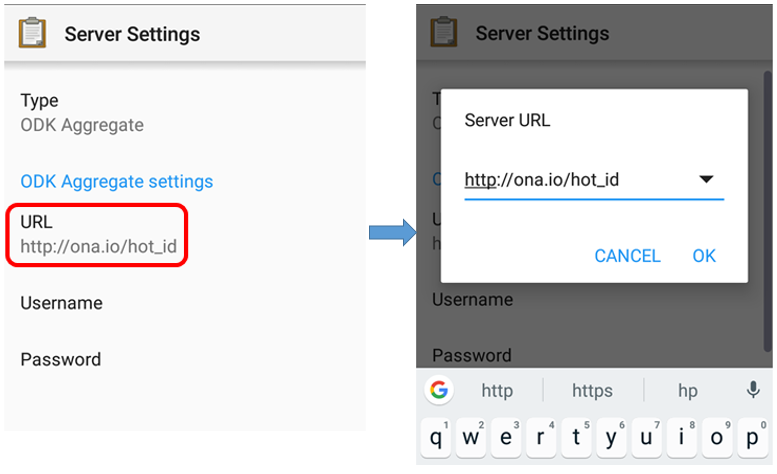
Step to fill the URL address in ODK Collect
2. Set the Image Size
In addition to the location point, you can also take a picture as additional information. You can set the picture resolution as desired. But, the picture resolution will also affect the amount of your phone memory or file which will be uploaded to the server later. It is recommended that you choose the smallest resolution of the image during initial setup. You can follow this step:
- Open ODK Collect and press the three point button in the upper right corner, select General Settings → Form Management.
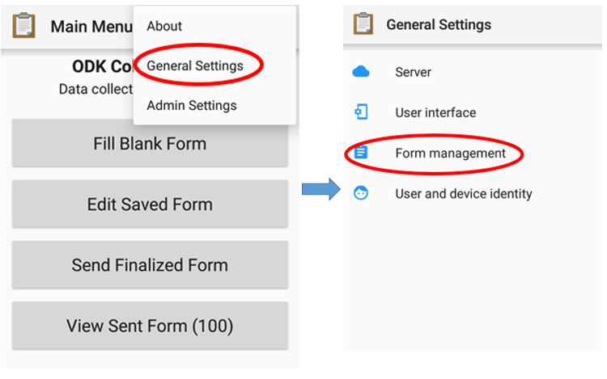
Option menu to set image resolution
- Select Image Size then select the **Very Small (640px) option.**
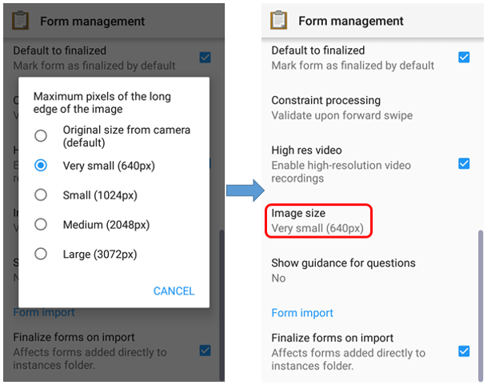
Image Size menu to set the image resolution
ODK Collect basic operations
1. How To Get a Blank Form Survey From Server
Before you fill-out the form survey that you made before, you need to download the blank survey form from specified server. For further explanation about create a survey form in ODK, you can learn in Making Survey Form for ODK & OMK applications module. You can follow this step to take a blank survey from the server:
- Press Get Blank Form and wait for the form to download from the server and make sure your internet is active.

Get blank form options to take form on a server
- Select the available form, tick the check box or if you want to select all the form, you can Select All. If your form does not appear, can press Refresh to reload the page.

Page display on Get Blank Form menu
- After select the form, you can press Get Selected to download the selected form.

Page display on the Get Blank Form to get the survey form
2. Fill the Survey Form * To fill the form, back to the start page and select Fill Blank Form menu. And then select one form blank that you want to fill in the survey form list.
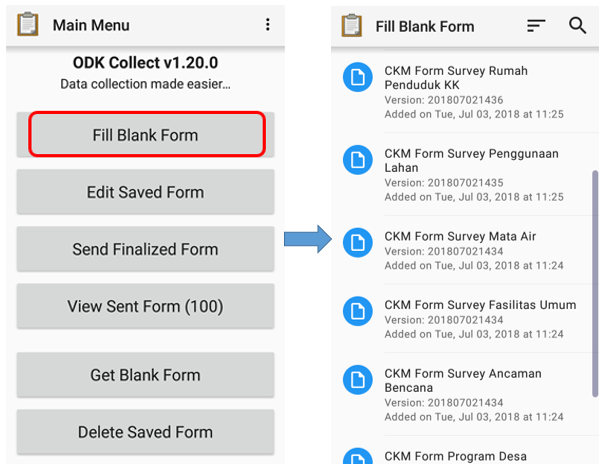
Fill Blank Form options for filling out the survey form and blank survey form list
- Swipe to right or left on the screen to move the next/previous page. Questions that have a red star in the top left are required and you can not go to next question if the answer is empty.
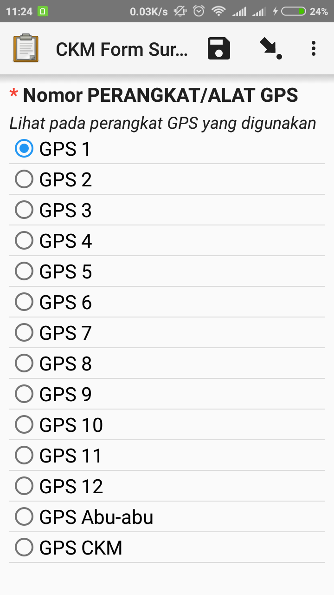
Examples of mandatory question (red star)
- You can take photos directly by choose Take Picture option or select a photo from your photo gallery by select Choose Image.

Take photo display in ODK Form
- To add object location points include OSM object tag, you can use additional application, that is OpenMapKit (OMK). You can immediately switch to OMK application by press Launch OpenMapKit on the form. You can learn about using OMK application in the module Using the OpenMapKit.
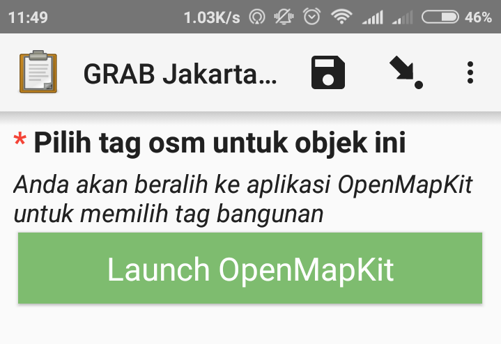
Launch OpenMapKit button on the survey form
- At the end, you can name the form, tick check Mark form as finalized and at the end choose Save Form and Exit to finalize the final form survey.

Finalization of page views on the survey form
3. Edit the Completed Survey Form The saved form automatically save in ODK Collect. If you want to edit the completed form, you can follow this step:
- You can back to start page and choose Edit Saved Form.
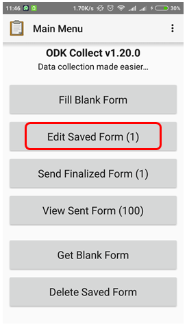
Edit Saved Form for edit the saved form
- Select the form that you want to edit by press the form and you can edit the form.
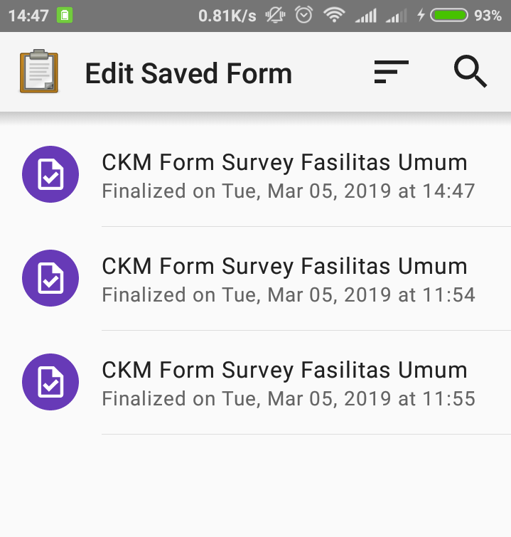
Edit save form page to select the form that you want to edit
- Then, press floppy disk icon

Edit save form page to select the form that you want to edit
4. Upload Survey Forms to Server After you fill and save the form, the next step is upload form survey to server. You can follow this step to upload form to server:
- To upload the form return to the server, you can choose Send Finalized Form.

Send Finalized Form to upload a survey form to the server
- Form survey is saved on that page and ready to send. You can choose Select All to select all forms first.
- Make sure you are connected on the internet. Then press Send Selected and wait until the process_ upload_ the form is complete.
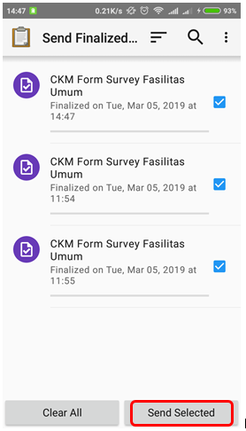
Survey forms that are ready to send in the Send Finalized Form
- All forms that have been successfully uploaded will be stored in View Sent Form menu and the icon turn into green.

View Sent Form and survey form that have been successfully uploaded to the server
- After upload the form, you can delete the form in _Delete Saved Form _menu.
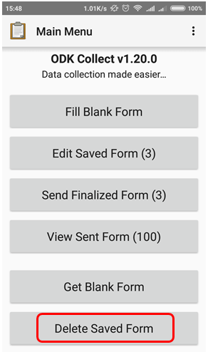
Delete Saved Form menu for delete the form
- You can delete the the filled form in Saved Forms option and delete the blank form in Blank Forms option. You should choose the form that you want to delete or Select All for delete all form.

Delete Saved Form option
- You need to confirm to delete the survey form by choose Delete Forms
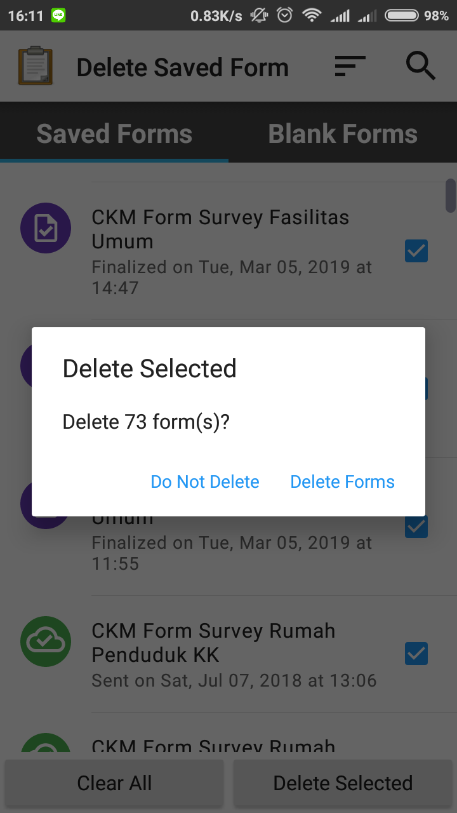
Delete confirmation dialog box
5. Upload Survey Form to Google Drive After you upload all the survey form to server, you need to save and upload the survey result file in .zip format in Google Drive folder that was created by your mapping supervisor. This is the step:
- Go File Manager or File Explorer on your smartphone and open your internal storage. Then open ODK folder. This folder contains all the survey result file which stored on ODK Collect application. Then select instances folder which contains *.osm file from object survey result.
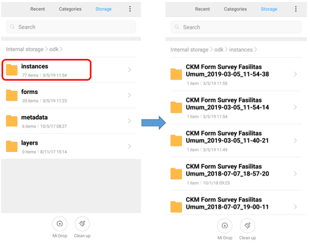
Instances folder in ODK folder and the survey result in instances folder
- Before you move instances folder to your computer, you need to convert the folder to .zip format by pressing the instances folder and select Compress. You can change the .zip file name.
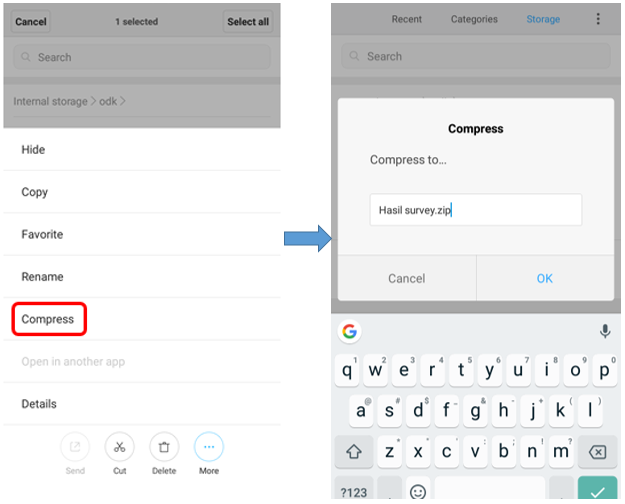
The step for convert to .zip format
- After you move .zip file to your computer, you can upload the file to Google Drive that already set by your mapping supervisor.

The .zip file that ready to move to computer
- You can upload the file to Survey Result folder (or another name that your mapping supervisor made) by click right on your mouse then choose **Upload Files **and choose the file that you want to upload.

The folder on Google Drive for upload .zip file